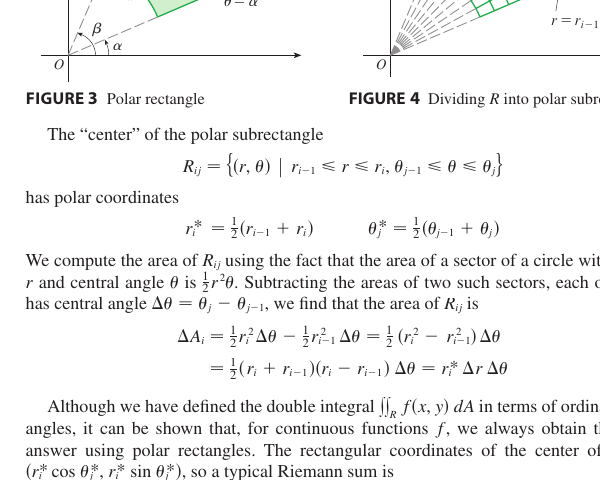

Chapter 15 · Multiple Integrals
Double and triple integrals, with polar, cylindrical, and spherical coordinates and their volume elements. Applications run from mass and centre of mass to probability density. The one habit that ties it together is slicing a region into tiny pieces, weighting each, and adding.
15.1 Double Integrals over Rectangles, Area, and Volume
3DRiemann sum. Chop the rectangle $R = [a, b] \times [c, d]$ into tiny tiles of area $\Delta A$. Put a column of height $f(x^*, y^*)$ above each, and add.
Midpoint Rule. Take $(x_{ij}^*, y_{ij}^*)$ at the centre of each subrectangle, so $\iint_R f\,dA \approx \sum_{i, j} f(\bar x_i, \bar y_j)\,\Delta A$. It is the simplest concrete estimator.
Properties of double integrals. For continuous or boundedly discontinuous $f$ and $g$ on a region $D$, and a constant $c$, the following hold.
- Linearity. $\iint_D (f + g)\,dA = \iint_D f\,dA + \iint_D g\,dA$ and $\iint_D cf\,dA = c\iint_D f\,dA$.
- Order. If $f \ge g$ on $D$ then $\iint_D f\,dA \ge \iint_D g\,dA$.
- Bounds. If $m \le f \le M$ on $D$ then $m\,A(D) \le \iint_D f\,dA \le M\,A(D)$.
- $\iint_D 1\,dA = A(D)$, the area of $D$.
- Domain splitting. If $D = D_1 \cup D_2$ with $D_1, D_2$ overlapping only on their boundary, then $\iint_D f\,dA = \iint_{D_1} f\,dA + \iint_{D_2} f\,dA$.
Area of a planar region $D$ is $\iint_D 1\,dA$. If $D$ is bounded below by $y = g(x)$ and above by $y = f(x)$ on $[a, b]$, then
Volume under a surface $z = h(x, y)$ above a region $D$ in the $xy$-plane is
Setting $h = f(x) - g(x)$ recovers Part A as a prism whose height is the gap.
Fubini's Theorem. If $f$ is continuous on $R = [a, b] \times [c, d]$, then
Why. The double integral adds the columns standing on the tiles, and the sum does not depend on the order of summation. Column by column or row by row, every tile is counted exactly once.
Average value. $\bar f = \dfrac{1}{A(R)} \iint_R f\,dA.$
15.2 Double Integrals over General Regions
2DType I region. $D = \{(x, y) : a \le x \le b,\ g_1(x) \le y \le g_2(x)\}$.
Type II region. $D = \{(x, y) : c \le y \le d,\ h_1(y) \le x \le h_2(y)\}$.
Changing order of integration. Sketch $D$, then re-describe it with the other set of strips.
Animations, sweeping a region by strips
Reversing the order is not just swapping $dy\,dx$ for $dx\,dy$. The limits change completely, so you must redraw $D$ and read off new bounds. This is exactly what makes integrals like $\displaystyle\int_0^1\!\int_x^1 e^{y^2}\,dy\,dx$ workable, since the inner integral has no elementary antiderivative until the order is flipped.
15.3 Double Integrals in Polar Coordinates
2DChange of variables. $x = r\cos\theta,\ y = r\sin\theta$, with $r \ge 0$ the distance from the origin and $\theta$ the angle from the positive $x$-axis.
Area element. $dA = r\,dr\,d\theta$. A polar tile is nearly a rectangle with sides $dr$ and $r\,d\theta$, the arc being longer for tiles farther from the origin. Multiplying the two sides produces the $r$. The oldest instance of this idea is the area of a circle. Cut the disk into rings of area $2\pi r\,dr$, unroll them, and they stack into a triangle of area $\tfrac12(2\pi R)(R) = \pi R^2$, which is $\int_0^R 2\pi r\,dr$.
Animations, the polar tile and the area of a circle
Never drop the Jacobian factor. $dA=r\,dr\,d\theta$ (not $dr\,d\theta$), $dV=r\,dz\,dr\,d\theta$ in cylindrical, and $dV=\rho^2\sin\phi\,d\rho\,d\phi\,d\theta$ in spherical. Leaving out the $r$ or the $\rho^2\sin\phi$ is the single most common multiple-integral error.
15.4 Applications of Double Integrals
2DA lamina has density $\rho(x, y)$, mass per area, over a region $D$.
Mass. $m = \iint_D \rho\,dA$.
Centre of mass. $\bar x = M_y / m$, $\bar y = M_x / m$, where
Why $x\rho$ inside. Start from the discrete picture. Put $n$ point masses $m_1, \ldots, m_n$ at positions $x_1, \ldots, x_n$ along a number line, and they balance at $$\bar x = \frac{m_1 x_1 + m_2 x_2 + \cdots + m_n x_n}{m_1 + m_2 + \cdots + m_n} = \frac{\sum m_i x_i}{\sum m_i}.$$ Each mass contributes its position weighted by its size. Chop the lamina into tiny tiles of area $dA$ and mass $dm = \rho(x, y)\,dA$, and the discrete sum becomes a double integral, $$\bar x = \frac{\iint_D x\,dm}{\iint_D dm} = \frac{\iint_D x\,\rho\,dA}{\iint_D \rho\,dA}.$$ The $x$ in the numerator is the tile position, its lever arm to the $y$-axis, and $\rho\,dA$ is the mass. Multiplying them is mass times position, exactly the discrete sum in the limit. The same logic gives $\bar y = \iint y\rho\,dA / m$ with $y$ the lever arm to the $x$-axis.
Average value. $\bar f = \dfrac{1}{\text{Area}(D)} \iint_D f\,dA.$
Probability density. A function $p(x, y) \ge 0$ on $D$ with $\iint_D p\,dA = 1$. The probability that a random point lies in a sub-region is the integral of $p$ over that sub-region.
15.6 Triple Integrals
3DBox. Over $B = [a, b] \times [c, d] \times [r, s]$ with $f$ continuous,
in any order, by Fubini.
General regions. For a solid $E$ bounded below by $z = g_1(x, y)$ and above by $z = g_2(x, y)$, with $(x, y)$ in a 2D region $D$,
Example. Compute the volume of the tetrahedron with vertices $(0,0,0)$, $(1,0,0)$, $(0,1,0)$, $(0,0,1)$. The top is $z = 1 - x - y$, the bottom is $z = 0$, and the projection is the triangle $x + y \le 1$, $x, y \ge 0$.
Strategy. Integrate out one coordinate first (the vertical strip), then describe the shadow in the remaining 2D region.
Applications.
- Volume. $V = \iiint_E dV$.
- Mass. $m = \iiint_E \rho\,dV$ for density $\rho(x, y, z)$.
- Centre of mass. $\bar x = \dfrac{1}{m}\iiint_E x\,\rho\,dV$, with $\bar y, \bar z$ alike. Same idea as the lamina. Each tiny piece has mass $dm = \rho\,dV$ at position $(x, y, z)$, and $x\,dm$ is mass times the lever arm to the $yz$-plane. The integral $\iiint x\rho\,dV$ adds up those signed first moments, and dividing by total mass gives the balance point.
- Moments of inertia about the coordinate axes, for example $I_x = \iiint_E (y^2 + z^2)\,\rho\,dV$, the distance squared from the axis.
Animations, the tetrahedron in all three orders of integration
15.7 Triple Integrals in Cylindrical Coordinates
3DConversion. $x = r\cos\theta,\ y = r\sin\theta,\ z = z$. Here $r = \sqrt{x^2 + y^2}$ is the distance from the $z$-axis.
Volume element. $dV = r\,dz\,dr\,d\theta$, the polar tile of area $r\,dr\,d\theta$ given height $dz$. The coordinate surfaces are cylinders $r = c$, half-planes $\theta = c$, and horizontal planes $z = c$, and the volume element is the small cell they cut out.
Figures, the cylindrical cell and the full coordinate grid
15.8 Triple Integrals in Spherical Coordinates
3DConversion. $x = \rho\sin\phi\cos\theta$, $y = \rho\sin\phi\sin\theta$, $z = \rho\cos\phi$, with $\rho^2 = x^2 + y^2 + z^2$.
Ranges. $\rho \ge 0$ (distance from origin), $0 \le \phi \le \pi$ ($\phi$ is the angle from the positive $z$-axis), $0 \le \theta \le 2\pi$ (azimuthal angle in the $xy$-plane).
Conventions differ between books. Here $\phi$ is the angle from the positive $z$-axis with $0\le\phi\le\pi$, and $\theta$ is the angle in the $xy$-plane. Some texts swap the two letters, so check which is which before substituting, and keep the $\sin\phi$ in the volume element.
Volume element. $dV = \rho^2 \sin\phi\,d\rho\,d\phi\,d\theta$. The spherical wedge is bounded by two concentric spheres at $\rho$ and $\rho + d\rho$, two cones with half-angles $\phi$ and $\phi + d\phi$, and two half-planes at azimuths $\theta$ and $\theta + d\theta$. Its edge lengths are the radial $d\rho$, the latitude $\rho\,d\phi$, and the longitude $\rho\sin\phi\,d\theta$.
Key relations. $r = \rho\sin\phi$ (cylindrical radius from $z$-axis), $z = \rho\cos\phi$. The Jacobian $\rho^2\sin\phi$ is the product of the three edge lengths. The coordinate surfaces are spheres $\rho = c$, cones $\phi = c$, and half-planes $\theta = c$.
Figures, the spherical cell and the full coordinate grid
The dome as a volume
The dome $z = 1 - x^2 - y^2$ from Chapter 14 sits over the unit disk. Its volume is one solid computed several ways. Draw each step by hand.
- 1D companion. Sketch $y = 1 - x^2$ on $[-1,1]$, the dome's slice through the $x$-axis, and find $\int_{-1}^{1}(1-x^2)\,dx$.
- 2D in 3D. Sketch the dome and its shadow $x^2+y^2\le 1$, then set up $\iint_D (1-x^2-y^2)\,dA$ with the inner strip in $y$.
- Polar. Evaluate $\int_0^{2\pi}\!\int_0^1 (1-r^2)\,r\,dr\,d\theta$ and say why the extra $r$ appears.
- Reverse. Redraw the shadow the other way and rewrite the rectangular integral.
- Sweep. Write the volume as a triple integral with $0\le z\le 1-x^2-y^2$, then in cylindrical, and check it matches.
- Weigh. With density $1$, symmetry gives $\bar x=\bar y=0$; find $\bar z$ and mark the balance height.
- Spherical. Cap the disk with the hemisphere $z=\sqrt{1-x^2-y^2}$ and set up its volume as $\int_0^{2\pi}\!\int_0^{\pi/2}\!\int_0^1 \rho^2\sin\phi\,d\rho\,d\phi\,d\theta$.
Worked example
Centre of mass of a semicircular plate. Plate $x^2 + y^2 \le a^2,\ y \ge 0$, density $\rho$ constant.
By symmetry $\bar x = 0$. Mass $m = \rho \cdot \tfrac{\pi a^2}{2}$.
$M_x = \rho \int_0^\pi\!\int_0^a (r\sin\theta)\,r\,dr\,d\theta = \rho \cdot \tfrac{a^3}{3} \cdot 2 = \tfrac{2\rho a^3}{3}$.
$\bar y = M_x/m = \dfrac{4a}{3\pi}$.
Practice problems
- Evaluate $\iint_R (x^2 y + 4)\,dA$ where $R = [0, 3] \times [1, 2]$.
- Calculate $\iint_D (x + y)\,dA$ where $D$ is the triangular region with vertices $(0, 0), (1, 0), (1, 1)$.
- Evaluate $\int_0^1 \int_x^1 e^{y^2}\,dy\,dx$ by reversing the order of integration.
- Find the volume of the solid under $z = 1 - x^2 - y^2$ above the $xy$-plane.
- Find the centre of mass of a semicircular plate $x^2 + y^2 \le a^2$, $y \ge 0$ with constant density.
- Find the volume of the tetrahedron bounded by $x = 0, y = 0, z = 0$ and $x + y + z = 1$.
- Use cylindrical coordinates to find the volume of the solid inside $x^2 + y^2 = 1$, below $z = 4$, above $z = 1 - x^2 - y^2$.
- Use spherical coordinates to evaluate $\iiint_E (x^2 + y^2 + z^2)\,dV$ where $E$ is the solid in the first octant bounded by the sphere $x^2 + y^2 + z^2 = 9$ and the coordinate planes.
More from Stewart

Strategies
Setting up a double integral. Sketch $D$, describe it as Type I ($a \le x \le b$, $g_1(x) \le y \le g_2(x)$) or Type II ($c \le y \le d$, $h_1(y) \le x \le h_2(y)$), whichever gives the simpler limits and antiderivative, and write the iterated integral.
When to switch to polar. Use polar when $D$ is a disk, annulus, or wedge, or the integrand contains $x^2 + y^2$, $\sqrt{x^2 + y^2}$, or $\arctan(y/x)$.
Surface area for $z = f(x, y)$ over $D$. $\displaystyle S = \iint_D \sqrt{1 + f_x^2 + f_y^2}\,dA.$
Setting up a triple integral. Integrate one variable first, usually $z$, with inner limits as functions of the other two. The shadow of the solid in the remaining plane gives the outer two integrals.
When to switch to cylindrical or spherical. Cylindrical suits rotational symmetry about an axis or integrands with $x^2 + y^2$. Spherical suits regions bounded by spheres or cones through the origin, or integrands with $x^2 + y^2 + z^2$.
Finding bounds with a ray. For spherical bounds, send a ray from the origin in the direction $(\phi, \theta)$ and record where it enters and leaves the solid. Those are the $\rho$ limits, and the directions that hit the solid at all give the $\phi$ and $\theta$ limits. For the cone $z = \sqrt{x^2+y^2}$ capped by $z = a$, only $\phi \le \pi/4$ hits, and the ray exits the cap where $\rho\cos\phi = a$, so $\rho$ runs to $a/\cos\phi$.
Mass, centre of mass, moments. $m = \iiint \rho\,dV$, $\bar x = \tfrac{1}{m}\iiint x\rho\,dV$ with $\bar y, \bar z$ alike, $I_x = \iiint(y^2 + z^2)\rho\,dV$ with $I_y, I_z$ alike.
Probability density. $p(x, y) \ge 0$ with $\iint p\,dA = 1$. Probabilities are integrals of $p$ over regions, and $E[X] = \iint x\,p\,dA$.
Jacobian for a change of variables. If $x = g(u, v)$, $y = h(u, v)$, then $dA = \left|\dfrac{\partial(x, y)}{\partial(u, v)}\right| du\,dv$. The determinant is the area of the small parallelogram that the map makes from a $du$ by $dv$ square. The polar $r$ is this determinant for $x = r\cos\theta$, $y = r\sin\theta$.